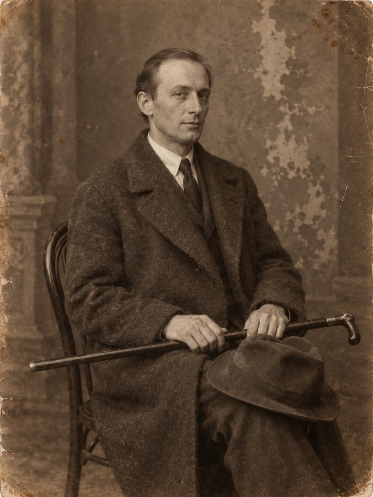

Счетовод

Толпу в Подколокольном переулке он увидел шагов за сорок и, как всегда, сначала посмотрел не на то, вокруг чего она собралась, а на неё саму.
Стояло человек двадцать. Бабы с пустыми кошёлками, которые шли к открытию распределителя и теперь опаздывали к нему с удовольствием. Двое хитровских в опорках, из тех, что с утра ещё трезвы и оттого любопытны. Старик с ведром. Мальчишки, которых милиционер в солдатской гимнастёрке и с красной повязкой на рукаве отгонял лениво и без всякой надежды, как отгоняют мух. И в стороне, у водосточной трубы, человек в кепке и тёмной куртке, который смотрел не на мостовую, а на тех, кто на неё смотрел. Вележев отметил его так, как отмечают знакомый по службе жест: агент угрозыска, должно быть. Покойник такому уже неинтересен, интересно, кто пришёл на покойника поглядеть.
Он ходил этим переулком на службу почти год, каждое утро, кроме воскресений. Можно было ходить Солянкой, но Солянкой ходили все, а он с давних пор предпочитал места, где под ногами меньше людей и оттого больше видно. Он подошёл, опираясь на трость, и встал за бабами. Трость в Москве стала его второй фамилией. Человек, который тяжело опирается на палку, не годен ни в окопы, ни в трудовую роту, и спрашивают с него меньше.
На тротуаре, головой к стене, лежал большой мужчина в холщовой рубахе навыпуск. Он был бос. Ноги в портянках, серых от пыли, лежали носками врозь, и одна портянка размоталась. Лицо было повёрнуто к переулку, и Вележеву понадобилось время, чтобы узнать это лицо, потому что он видел его только сверху вниз и всегда в фуражке.
— Сапоги сняли, — сказала баба впереди него с тем удовлетворением, с каким говорят о чужой беде, когда своя не слишком велика. — Хорошие были сапоги. Юфтевые.
— Лошадь где? — спросил хитровский.
— Лошадь у Ивана на дворе стоит. С вечера не забрал.
— Грабёж, — сказал милиционер, ни к кому не обращаясь, и сплюнул в сторону. — Расходитесь, граждане. Чего не видали.
Видали, конечно, всё. В девятнадцатом году на московских мостовых лежало столько всего, что одним мёртвым ломовым извозчиком никого не удивишь. Ломовыми звали тех, кто возил по городу тяжёлое на длинных телегах: мешки, бочки, железо, дрова. Народ был крупный, крикливый, жил при лошадях и пах ими. Этот пах теперь только пылью.
Вележев смотрел на затылок.
Затылок был проломлен низко, у самого основания черепа, одним ударом. Не кистенём и не камнем: края были ровные, удар пришёлся чем-то тяжёлым и узким, свинцовой гирькой в чулке или обрезком трубы. Били сзади и чуть снизу, значит, стояли вплотную, значит, ломовой пустил ударившего к себе за спину. Своего пустил. Чужого ломовой в переулке у Хитровки, да ещё ночью, за спину не пустит, ломовые люди тёртые.
На груди, под расстёгнутым воротом, виднелся шнурок, а на шнурке, наполовину съехав под рубаху, лежал кожаный кошель, тугой.
Вележев постоял ещё минуту. Он подумал, что грабитель, который не поленился стянуть с мертвеца сапоги, не оставил бы на нём кошеля, потому что кошель берут первым, а сапоги потом, если останется время. Значит, сапоги сняли для милиционера, а кошель забыли, потому что тот, кто бил, о деньгах не думал вовсе. Он подумал и о том, что милиционеру этого говорить не нужно и некому. Он повернулся и пошёл дальше, к Солянке, опираясь на трость. Человек в кепке у водосточной трубы смотрел в это время на мальчишек.
Покойника звали Прокофий Сычёв. Пятнадцать лет назад он был унтер-офицером Тифлисского губернского жандармского управления, стоял у дверей дома без вывески, носил пакеты, отвечал «так точно-с» и брился так тщательно, что щёки у него к вечеру блестели, как сапоги.
⁂
Главлеском помещался в бывшей страховой конторе, где на лестнице ещё остались медные прутья для ковра, а самого ковра давно не было. Главный лесной комитет ведал дровами для всей республики, то есть тем, чего в республике не было. Пустые сажени Вележев и считал.
Он служил там счетоводом с прошлой осени, по бумагам, которые выправил ещё в Тифлисе и в которых значился Ляпиным Николаем Андреевичем, конторщиком, из мещан. Бумаги были хорошие. Он сам когда-то учил людей делать такие бумаги, и ему было приятно, что выучка пригодилась хотя бы раз для него самого.
Его стол стоял у окна, во втором ряду. Перед ним сидела машинистка Лидочка, бывшая гимназистка, у которой от недоедания проступили скулы, и она пудрила их зубным порошком, чтобы не блестели. Позади сидел старый бухгалтер Анисимов, который сорок лет вёл книги на Нижегородской ярмарке и теперь, по его собственным словам, вёл книги самому Господу Богу, поскольку больше никто не знал, куда девается то, что в них записано.
— Читали? — спросил Анисимов, едва Вележев сел. — Кошелькова-то взяли. Застрелили.
— Читал.
— Трое суток в квартире сидели, — сказала Лидочка, не оборачиваясь, и это означало, что ей рассказали больше, чем было в газете. — Хозяев увели, а сами сидели. Чай пили, говорят, хозяйский. И ждали. Он и пришёл.
— Засада, — сказал Анисимов с уважением, словно речь шла о хорошо сведённом балансе.
Вележев раскрыл папку со сводками. Засада, подумал он, есть единственное в его прежнем ремесле, чему нельзя научить. Можно научить ходить за человеком, не попадаясь ему на глаза. Можно научить слушать, писать, сличать почерки. А сидеть трое суток в чужой квартире и не уйти, не закурить у окна, не начать разговаривать в полный голос на второй день, когда всем ясно, что никто не придёт, — этому не учат. Это или есть в человеке, или нет. Тот, кто взял Кошелькова, умел не торопиться.
Он пододвинул к себе счёты.
Сводки шли из губерний: Владимирской, Ярославской, Костромской, Вологодской. Сколько заготовлено, сколько вывезено, сколько лежит у станций и гниёт, потому что вагонов нет. Дрова считали кубическими саженями. Кубическая сажень — это поленница высотою в рост очень высокого человека, такой же ширины и такой же глубины, и одна такая поленница кое-как грела одну небольшую квартиру в одну зиму. Москве на зиму нужны были сотни тысяч таких поленниц. Вележев складывал цифры из Владимира с цифрами из Костромы, и выходило, что Москва будет мёрзнуть. Он знал это уже год, потому что уже год складывал эти цифры, и ни разу не ошибся.
Счёты стучали ровно. Он подумал, что Сычёв, должно быть, возил дрова тоже: летом ломовым больше возить было нечего.
⁂
Неделю назад, в воскресенье, Вележев ходил на Сухаревку менять табак на сахар.
Сухаревка в девятнадцатом году была самым большим и самым запрещённым рынком в Москве. Торговать было нельзя, и торговали все. Под Сухаревой башней, на площади, в переулках вокруг и прямо на Садовой стояли, сидели и ходили люди, которые продавали то, что у них осталось, и покупали то, без чего нельзя. Продавали шубы, рояльные струны, иконы без окладов, оклады без икон, генеральские эполеты, керосин в бутылках из-под шампанского, кенарей в клетках и котят на счастье. Покупали хлеб, сало, сахар и соль. Деньги ходили всякие, но лучше всего ходил обмен.
Он выменял сахар, полфунта, грязно-серого и сырого, и уже уходил, когда с телеги, стоявшей у края площади, его окликнули.
— Ваше благородие.
Сказано было негромко, но так, как говорят люди, которые долго носили мундир: в обращение вкладывают не голос, а выправку. Вележев не обернулся. Он прошёл ещё несколько шагов, но его догнали. Большой человек в холщовой рубахе, с кнутом за поясом, с бритыми, по старой памяти, щеками, пошёл рядом, отставая на полшага, как ходят при начальстве.
— Ваше благородие, господин ротмистр, — сказал Сычёв, и в голосе его была радость, которую Вележев услышал и которой испугался больше, чем самого обращения. — Не признаёте? Сычёв я. Прокофий. Из управления. Я вас тогда до Михайловского моста провожал, в пятом году, когда…
— Вы обознались, любезный, — сказал Вележев.
Он сказал это так, как говорил когда-то агентам, которые позволяли себе узнать его на улице. Ровно, без раздражения и без всякой интонации, после которой человеку больше не хочется ничего прибавлять.
Сычёв остановился. Вележев шёл дальше, тяжело опираясь на трость, и слышал, что тот не идёт за ним. Потом сзади, уже громче, через гомон, донеслось:
— А я тут нашего видал, ваше благородие! Нашего, из управления! Он меня тоже признал!
Вележев свернул в переулок и не обернулся. В переулке он остановился у стены, переложил сахар из одного кармана в другой и постоял, пока не убедился, что Сычёв не пошёл следом. Сычёв не пошёл. Вележев постоял ещё и только тогда понял, что его руки, которые всегда были спокойнее его самого, перекладывали этот сахар дважды.
Он тогда решил, что ломовой, напившись, разболтает кому-нибудь про ротмистра, и что от Сухаревки надо держаться подальше месяц-другой. Больше он ничего не решил. О том, кого «нашего» Сычёв видал, он не подумал вовсе. Ему было не до чужих: он берёг себя.
⁂
В обед Лидочка ушла в столовую при комитете, где давали суп из воблы, а Анисимов развязал узелок с варёной картошкой. Вележев остался за столом и смотрел в окно.
Нашего, повторил он про себя. Из управления.
Тифлисское губернское жандармское управление было небольшим. Начальник, его помощники, адъютант, несколько офицеров, к которым принадлежал и он сам. Письмоводители, писари, вахмистр, унтер-офицеры при дверях и при пакетах. И отдельно — филёры, люди наружного наблюдения, которые ходили по городу за теми, на кого им указывали, и потом писали в дневниках наблюдения, кто куда зашёл, с кем говорил и сколько пробыл. Их было человек двадцать, иногда меньше, иногда больше. Их нанимали и рассчитывали, они спивались, женились, уезжали, их узнавали на улицах и переводили в другие города.
Кто из них мог оказаться в Москве летом девятнадцатого года и узнать на Сухаревке ломового Сычёва? Да кто угодно. Москва теперь была главным городом, сюда стянуло всех, у кого не осталось другого места, и всех, кто надеялся, что в большом городе их не узнают. Сюда стянуло и его самого.
Сычёв сказал: «он меня тоже признал». Сычёв сказал это с радостью, как говорят о встрече с земляком. А через неделю его убили одним ударом сзади, и он пустил ударившего за спину.
Вележев поймал себя на том, что думает о Бирюке. Так в Тифлисе убивал Мгели, тот, кого в управлении звали Бирюком и кому Вележев двенадцать лет платил жалованье: сзади, рукой, которая знала, где кончается один позвонок и начинается другой. Но Бирюк был мёртв. Вележев сам прочёл об этом в мае прошлого года, в тифлисской газете, в заметке на четвёртой полосе: отставной пристав застрелил на лестнице собственного дома видного работника. Заметка была короткая и сухая, и он узнал в ней руку газетчика, которому когда-то дважды предлагал сотрудничество и который дважды ему отказал. Он прочёл её дважды и в тот же месяц уехал из Тифлиса. Его там больше ничего не держало. Человека, от которого он прятался, не стало. Человека, который помнил его ротмистром и был ему хоть сколько-нибудь равен, не стало тоже: старый князь умер в тот же день. Оставаться в городе, где тебя все знают и никто больше не боится, было глупо.
Дорога до Москвы заняла у него почти месяц, через горы и через полстраны в теплушках, и он не любил её вспоминать.
Нет, подумал он, это не Бирюк. Мёртвые не ходят по Сухаревке. Это просто удар, который знает всякий, кто служил при лазарете или стоял в мясном ряду. И всякий, кого учили.
— Николай Андреевич, — сказал Анисимов. — Картошки возьмите. Вы сегодня зелёный.
— Благодарю, — сказал Вележев и взял.
⁂
Вечером он купил у мальчишки-газетчика «Известия» и прочёл их, стоя у забора на Покровке. Про Кошелькова там было уже немного: убит при задержании, банда ликвидирована. Про ломового в Подколокольном не было ничего и не могло быть. На заборе над газетой висел плакат, по которому крупными буквами шло «Все на борьбу с Деникиным!», а ниже, мелко, что-то о том, что враг рвётся к Москве. Деникин в самом деле рвался: в газете писали о боях на юге осторожно, тем языком, каким пишут, когда дела плохи. Вележев за год выучился читать советские газеты так же, как когда-то читал перлюстрированные письма, то есть не то, что написано, а то, о чём умолчали.
Он жил на Хохловском, в бывшей квартире вдовы присяжного поверенного, которую уплотнили. Вдова, Серафима Павловна, занимала теперь одну комнату из пяти, и в остальных четырёх жили чужие люди: рабочий с завода «Гужон» с женой и детьми, двое студентов, которых он почти не видел, и он сам. Его комната была бывшей детской. На обоях ещё сохранились выцветшие кораблики, и в углу, у печки, стоял маленький стульчик, который Серафима Павловна не позволила сжечь прошлой зимой.
Он вошёл, запер дверь и, не раздеваясь, сел на кровать. Трость он теперь держал не так, как на улице. Он держал её на весу, поперёк колен, за середину, как держал всегда, когда думал. В Тифлисе он не опирался на неё ни разу за двенадцать лет. Она нужна была ему не для ходьбы, а для рук, которым нужно было что-то держать, пока голова работает.
Если «наш», которого видел Сычёв, убил Сычёва за то, что тот его узнал, значит, «нашему» очень не хотелось, чтобы его узнавали. В Москве девятнадцатого года так сильно не хотят быть узнанными только те, кому есть что терять. Бывший жандарм, ставший ломовым извозчиком, терять ничего не боится: его и так могут взять в любой день. А вот бывший жандарм, ставший кем-то другим, кем-то, о ком нельзя знать, что он был жандармом, — такой может убить.
И тогда следующий вопрос, подумал Вележев, такой: видел ли тот, кто убил Сычёва, как Сычёв неделю назад шёл за ним по Сухаревке и кричал «ваше благородие».
Он сидел долго. За стеной ругались студенты, потом перестали. На лестнице кто-то уронил ведро. Серафима Павловна в своей комнате завела граммофон, тихо, одну и ту же пластинку, как заводила каждый вечер, — вальс, название которого он так и не спросил.
Он попробовал вспомнить лица филёров тифлисского управления. Он помнил лица тех, за кем они ходили: студентов, рабочих, армянских купцов, грузинских князей, социал-демократов, эсеров, анархистов, их жён, любовниц и квартирных хозяек. Он помнил почерки их писем, клички, которые давал им сам, номера их домов. Тех, кто по его приказу годами ходил за всеми этими людьми по жаре и в дождь, писал свои дневники наблюдения с грамматическими ошибками и получал за это по тридцать рублей в месяц, он помнил плохо. Помнил фамилии, и то не все. Помнил, кто пил и кто был женат. Лица не вспоминались. Его этому не учили: смотреть на своих.
Нашего, подумал он. Какого?
Он так и не смог вспомнить ни одного лица.